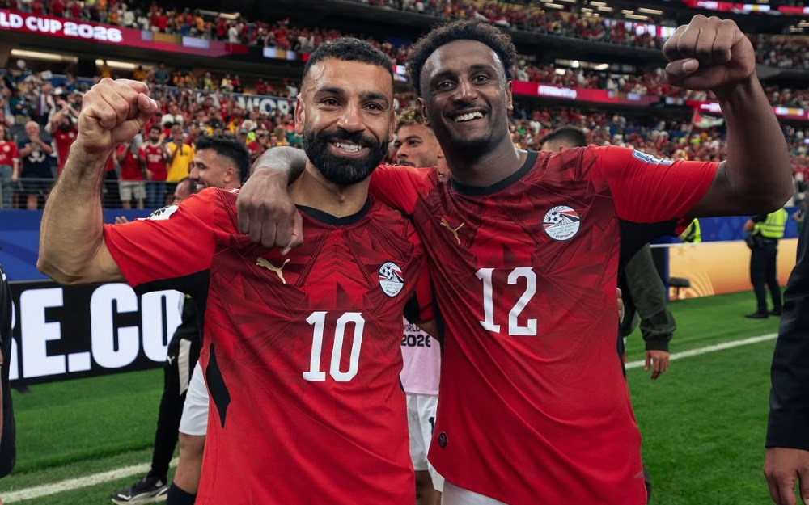

Across the world, footballers carry Egyptian blood and a foreign flag — raised in European academies, invisible to the federation. Haissem Hassan was one of them, found by luck weeks before the World Cup. These are 70 more, found by method — and every one is under 26.

Dual nationals, born 1999 or later, eligible under FIFA Article 9 and never cap-tied to a senior side. Those marked raised abroad are the true Hassan story. Tap any card for the full dossier — pitch role, career stats, transfer path and market value.
Squad status across each player’s last ten club matchdays — started, benched, or left out entirely. A run of grey says more about a prospect’s standing than any career total. National-team call-ups are excluded so they don’t read as club selections.
Where each player has just been and where his club goes next. The fixture is the club’s game — it says they play on Saturday, not that he is picked; read it against his squad status under Scouting mode. Blank where a league has not published 26/27 dates yet.
Read every club’s squad across 38 countries where the Egyptian diaspora plays — Europe and the Gulf.
Keep every player with an Egyptian passport. Apply FIFA Article 9 to separate the free from the cap-tied.
A ranked dossier with stats, transfers and values. Human judgement does the rest — a call, a watch, an invitation.
Hassan was one name caught by luck. This is 70 caught by method — and it refreshes every season. The next Pharaoh may be a 20-year-old in a German reserve side tonight. We know where to look.
About the data. Sourced from public Transfermarkt squad, profile and performance data across 38 countries, classified by FIFA Article 9 eligibility. “Raised abroad” = Egypt is the player’s second listed nationality. Club career stats are all-competition totals; clean sheets are a proxy (games the opponent did not score while the player was on the pitch). Market values and transfer fees are Transfermarkt figures. This is a candidate list for human scouts, not a verified eligibility ruling — confirm each player with the federation before contact. Coverage is deepest in Germany, Spain and the Gulf.